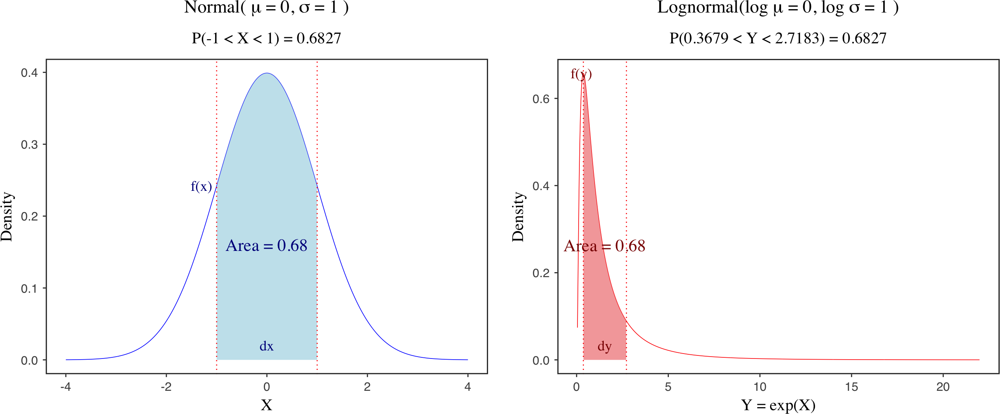

Understanding Jacobian Adjustments for Constrained Parameters in Stan
1 Normal distribution
The Jacobian adjustment is a key concept in statistical modeling that arises when transforming probability distributions from one space to another. The intuition is that when you change a random variable, you’re not just changing the values - you’re also changing how “stretched” or “compressed” the probability density becomes at different points. To account for the distortion caused by the transform, the density must be multiplied by a Jacobian adjustment. This ensures that probability masses of corresponding intervals stay unchanged before and after the transform. This is illustrated by the figure above, which compares the probability density functions of a standard normal distribution and its transformed lognormal distribution. Although the shapes of the two distributions differ, the transformation must preserve the probability mass over corresponding intervals.
In Bayesian inference, Jacobian adjustments are especially important when transforming parameters from a constrained space (e.g., the positive real line) to an unconstrained space (e.g., the entire real line), which is commonly done to improve sampling efficiency and numerical stability. In Stan, such transformations are typically handled automatically. When you declare a constrained parameter (e.g., <lower=0>), Stan internally transforms it to an unconstrained space and applies the appropriate Jacobian adjustment to maintain the correct posterior density.
However, if you manually transform variables inside the transformed parameters block and assign priors to the transformed variables, you need to explicitly include the Jacobian adjustment to preserve the correct log posterior density (lp__). Failing to do so can lead to biased inference. To illustrate how this works, I’ll use a simple example of normal distribution, focusing on how Stan handles transformations of the standard deviation parameter \(\sigma\) (i.e., <lower=0>) and how we can include a manual Jacobian adjustment.
1.1 Simulate data
I will first simulate some data from a normal distribution with mean 0 and standard deviation 20. A large standard deviation is chosen to make the effect of Jacobian adjustment more pronounced.
data_norm <- list(N = 100, y = rnorm(100, 0, 20))1.2 Posterior parameter estimates
I will include four models to compare posterior parameter estimates and the log posterior density (lp__). The models are:
Model 1: A normal distribution with a proper constraint on \(\sigma\) Model 2: A normal distribution without a constraint on \(\sigma\) Model 3: A normal distribution with an exponential transformation of unconstrained \(\sigma_z\) and a Jacobian adjustment Model 4: A normal distribution with transformation of \(\sigma\) in the transformed parameters block (No Jacobian needed!)
1.2.1 Model 1: constrained \(\sigma\)
The first model is a simple normal distribution with a proper constraint on \(\sigma\) (<lower=0>). According to Stan reference manual, to avoid having to deal with constraints while simulating the Hamiltonian dynamics during sampling, every (multivariate) parameter in a Stan model is transformed to an unconstrained variable behind the scenes by the model compiler, and Stan handles the Jacobian adjustment automatically.
data {
int<lower=0> N; // number of observations
vector[N] y; // observed data
}
parameters {
real mu; // mean parameter
real<lower=0> sigma; // standard deviation parameter
}
model {
// Priors
target += normal_lpdf(mu | 0, 10); // prior for mean
target += normal_lpdf(sigma | 0, 5); // prior for standard deviation
// Likelihood
target += normal_lpdf(y | mu, sigma); // data follows normal distribution
}md_norm <- stan_model(file = "./Models/normal.stan")
fit_norm <- sampling(md_norm, data_norm,
iter = 2000, chains = 1
)
print(fit_norm, pars = c("mu", "sigma", "lp__"))1.2.2 Model 2: unconstrained \(\sigma\)
Now we turn to another model by removing the constraint on \(\sigma\). In this case, the parameter \(\sigma\) is not a constrained variable, and there is no Jacobian adjustment handled by Stan. This means that the log posterior density (lp__) is biased.
data {
int<lower=0> N; // number of observations
vector[N] y; // observed data
}
parameters {
real mu; // mean parameter
real sigma; // standard deviation parameter
}
model {
// Priors
target += normal_lpdf(mu | 0, 10); // prior for mean
target += normal_lpdf(sigma | 0, 5); // prior for standard deviation
// Likelihood
target += normal_lpdf(y | mu, sigma); // data follows normal distribution
}md_norm_no_constraint <- stan_model(file = "./Models/normal_no_constraint_sigma.stan")
fit_norm_no_constraint <- sampling(md_norm_no_constraint, data_norm,
iter = 2000, chains = 1
)
print(fit_norm_no_constraint, pars = c("mu", "sigma", "lp__"))1.2.3 Model 3: exponential transformation of unconstrained \(\sigma_z\) and Jacobian adjustment
As a comparison, we can also reformulate the model by defining the parameter \(\sigma_z\) as an unconstrained variable, and we then transform it via an exponential function (positive real line). The transformed variable \(\sigma\) will be assigned with a prior and used in the model. This is exactly what has happened internally by Stan when you define a parameter with a proper constraint (e.g., <lower=0> for \(\sigma\)). Stan handles the transformation from an unconstrained internal representation to this constrained user-facing value. Since \(\sigma\) is transformed from \(\sigma_z\), we need to include a Jacobian adjustment to preserve the correct log posterior density (lp__).
Let me explain how the Jacobian adjustment works step by step.
Let: \[y = \sigma_e, \quad x = \sigma, \quad y = \exp(x)\]
We are transforming from an unconstrained variable \(x \in \mathbb{R}\) to a positive variable \(y \in (0, \infty)\).
Next, we can compute the derivative: \[\frac{dy}{dx} = \frac{d}{dx} \exp(x) = \exp(x) = y\]
We apply the change-of-variables formula for densities: \[\left|f_Y(y) \cdot dy\right| = \left|f_X(x) \cdot dx\right| \quad \Rightarrow \quad f_Y(y) \cdot \left| \frac{dy}{dx} \right| = f_X(x)\]
Substituting \(\frac{dy}{dx} = y\), we get: \[f_Y(y) \cdot y = f_X(x)\]
Taking logs to get log-densities: \[\log f_X(x) = \log f_Y(y) + \log y\]
This extra term \(\log y\) is the Jacobian adjustment.
In Stan notation, we get:
\[\text{target} ~ \text{+=} ~ \text{normal\_lpdf}(\mu, \exp(\sigma_e)) + \log(\sigma_e)\]
data {
int<lower=0> N; // number of observations
vector[N] y; // observed data
}
parameters {
real mu; // mean parameter
real sigma_z; // unconstrained standard deviation parameter
}
transformed parameters {
real sigma = exp(sigma_z);
}
model {
// Method 1: prior on sigma, with transformed block and Jacobian adjustment
target += normal_lpdf(sigma | 0, 5); // prior for the transformed standard deviation
// Method 2: local variable sigma, no transformed block, but with Jacobian adjustment
// real sigma = exp(sigma_z);
// target += normal_lpdf(sigma | 0, 5); // prior for the transformed standard deviation
target += normal_lpdf(mu | 0, 10); // prior for mean
// Likelihood
target += normal_lpdf(y | mu, sigma) + log(sigma); // add Jacobian adjustment
// target += normal_lpdf(y | mu, sigma) + sigma_z; // alternatively
}
md_norm_exp_jacobian <- stan_model(file = "./Models/normal_exp_sigma_jacobian.stan")
fit_norm_exp_jacobian <- sampling(md_norm_exp_jacobian, data_norm,
iter = 2000, chains = 1
)
print(fit_norm_exp_jacobian, pars = c("mu", "lp__"))
print(fit_norm_exp_jacobian, pars = c("mu", "sigma", "lp__"))1.2.4 Model 4: transformation of \(\sigma\) in the transformed parameters block (No Jacobian needed!)
It is also worth mentioning that if you transform the parameter \(\sigma\) in the transformed parameters block without assigning a prior to the transformed parameter, you do not need to include a Jacobian adjustment. This is because the transformation is applied to the parameter after sampling. This is conceptually similar to generating quantities from posterior draws.
As a general rule, if you place priors on the declared parameters or directly use the parameters inside parameters block (in most cases), rather than on transformed parameters, no Jacobian adjustment is needed—this is a simple variable transformation. By contrast, if you transform a parameter and place a prior on the transformed variable, you need to include a Jacobian adjustment.
data {
int<lower=0> N;
vector[N] y;
}
parameters {
real mu;
real<lower=0> sigma;
}
transformed parameters {
// Method 1: simple transformation without a prior for the transformed parameter
real log_sigma = log(sigma);
}
model {
// Priors
target += normal_lpdf(mu | 0, 10);
target += normal_lpdf(sigma | 0, 5); // prior on sigma
// Likelihood
target += normal_lpdf(y | mu, sigma);
}md_norm_transform_parameters <- stan_model(file = "./Models/normal_transform_parameters.stan")
fit_norm_transform_parameters <- sampling(md_norm_transform_parameters, data_norm,
iter = 2000, chains = 1
)
print(fit_norm_transform_parameters, pars = c("mu", "sigma", "lp__"))1.2.6 Comparison of Results
As we can see, the posterior parameter estimates for \(\mu\) and \(\sigma\) are similar across all three models. However, the log posterior density (lp__) differs between Model 1 and Model 2. This is because Model 1 includes the proper constraint on \(\sigma\), while Model 2 does not. The log posterior density in Model 2 is biased due to the missing Jacobian adjustment. Model 3 addresses this issue by including a Jacobian adjustment. In general, if you are interested in parameter inference, it may be not a major concern in this case, but missing Jacobian adjustments can cause serious problems for model comparison (e.g., WAIC, LOO, and Bayes factors).
Note that this example is only for illustration and help you understand the concept of Jacobian adjustment and how Stan handles changes of variables. In practice, you should always use the proper constraint on the parameter and let Stan handle the Jacobian adjustment automatically, which is both more efficient and more reliable.
Related links